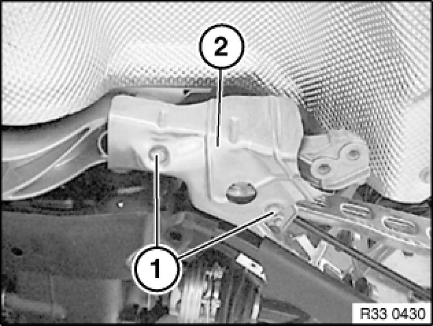
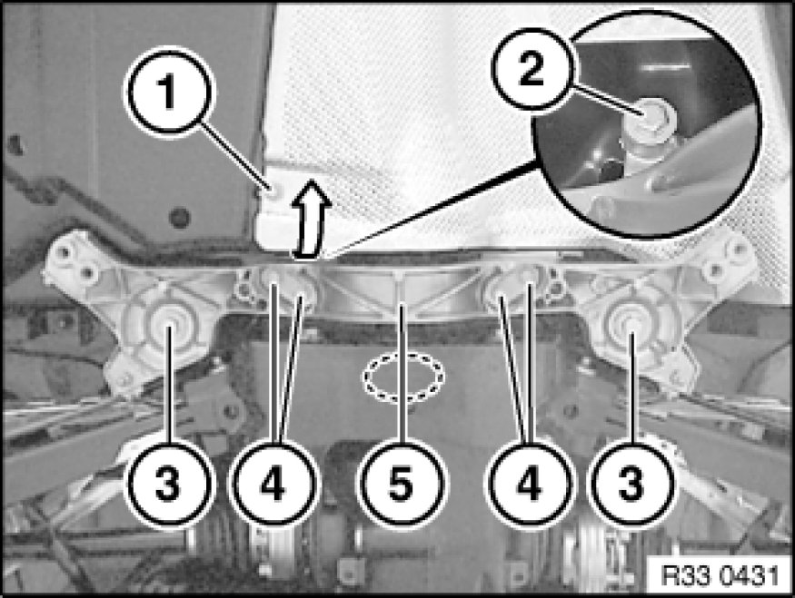

Removing and Installing/Replacing Compression Strut for Rear Axle Carrier
33 32 160 - Removing and installing/replacing compression strut for rear axle carrier

Important!
Observe safety instructions 00 .. ... Lifting Vehicle With A Lifting Platform for raising the vehicle
Driving without the compression strut is not permitted!

Necessary preliminary tasks:
- Remove both tension struts Removing and Installing/Replacing Left or Right Tension Strut
- Lower exhaust system in rear area Service and Repair

Release screws (1) and remove heat shield (2).
Tightening torque 33 32 27AZ Control Arms and Struts (Rear).

Warning!
Danger of injury!
Failure to comply with the following instructions may result in the vehicle slipping off the lifting platform and critically injuring other persons.
When supporting components, make sure that
- the vehicle can no longer be raised or lowered
- the vehicle does not lift off the locating plates on the lifting platform

Important!
Risk of damage!
Support rear axle carrier in area of dashed line with workshop jack.
Release screw (1), press tunnel thermal insulation downwards a little and release screw (2).
Release screws (4).
Tightening torque 33 32 17AZ Control Arms and Struts (Rear).
Release bolts (3) and remove compression strut (5).
Secure rear axle carrier by inserting bolts (3).
Installation Note:
Check threads for damage; if necessary, repair with Helicoil thread inserts Notes on Repairing Threads.
Make sure handbrake Bowden cables are correctly positioned.
Tightening torque 33 33 3AZ Rear Axle Suspension.

Replacement:
Convert both holders for handbrake Bowden cables.